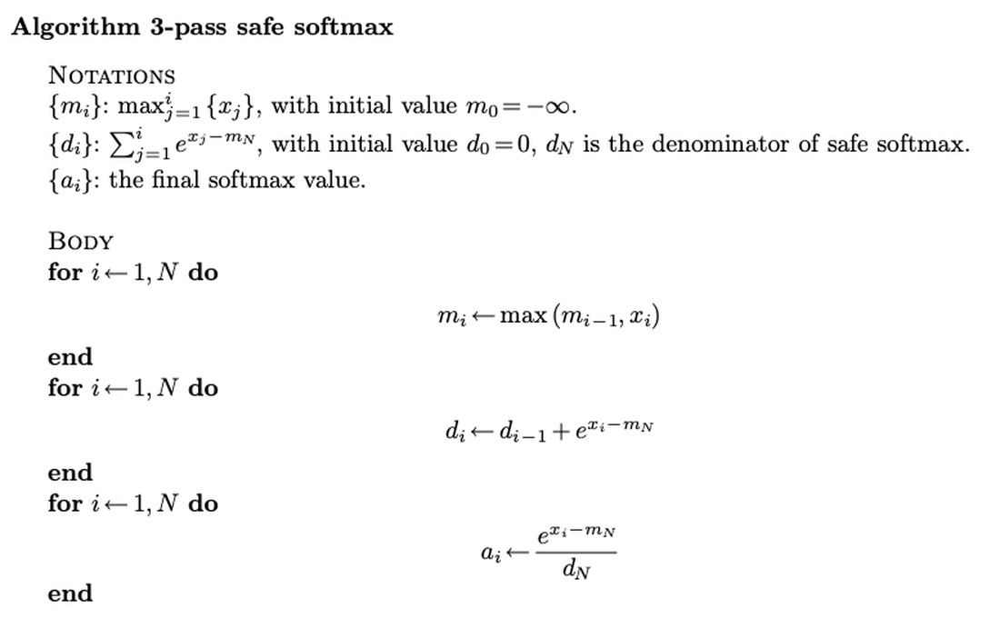
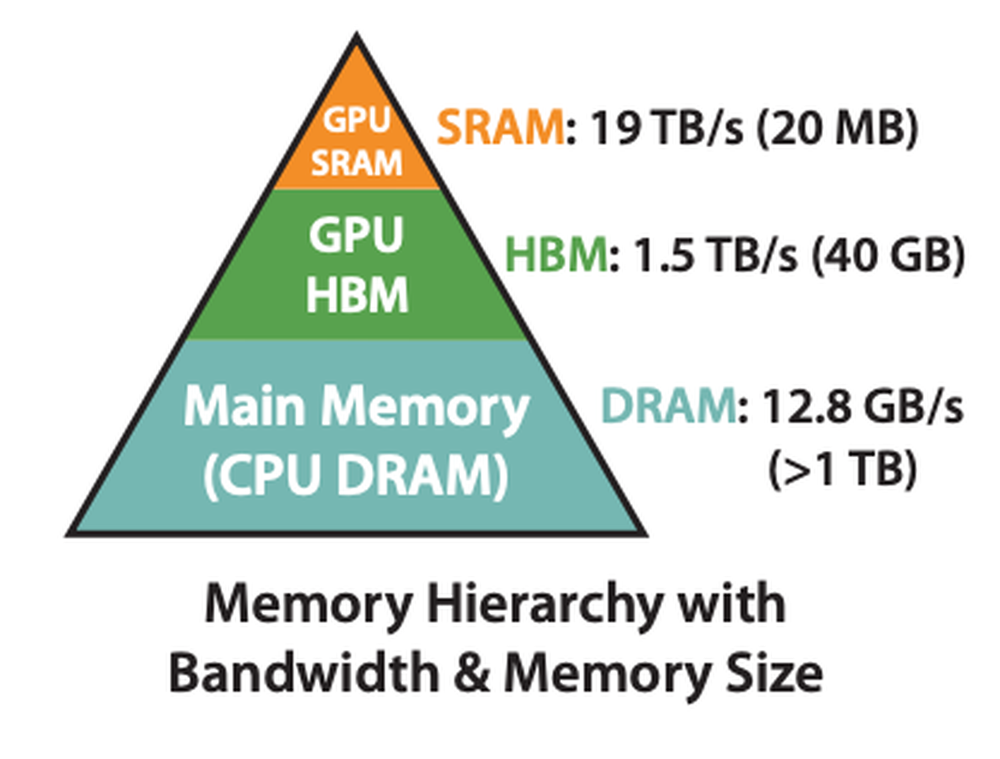
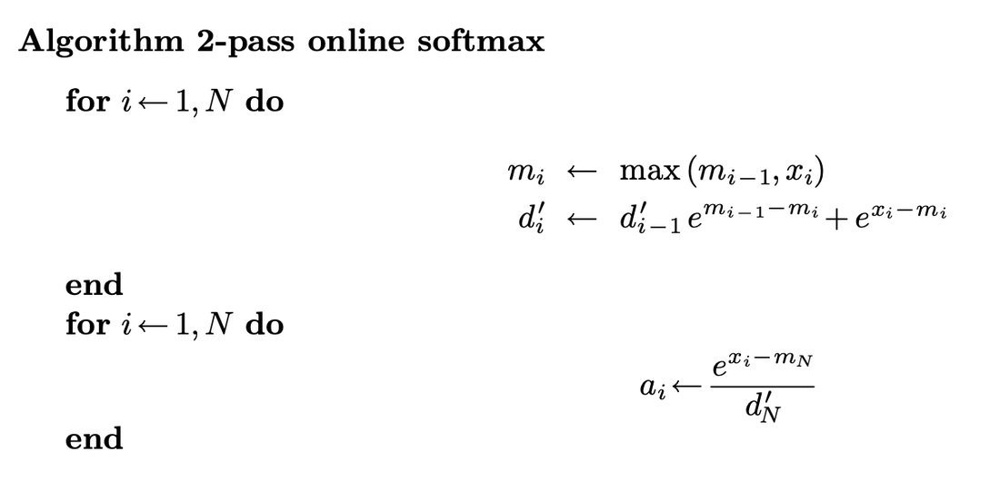
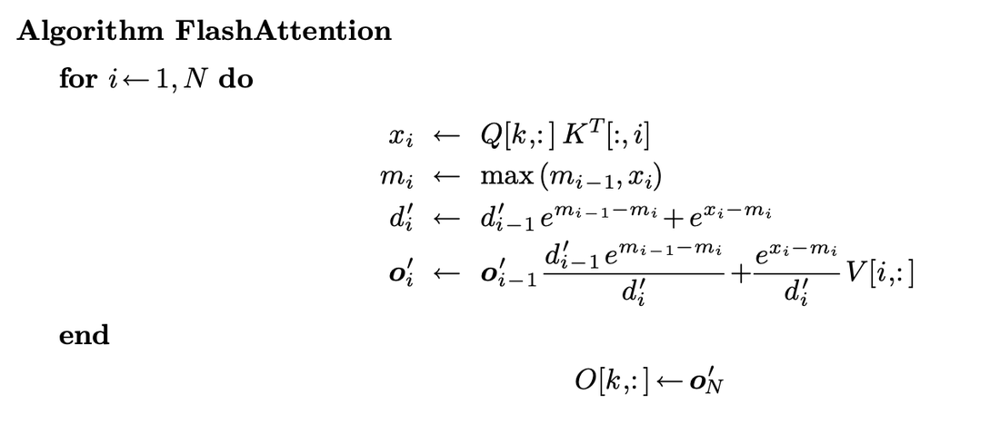
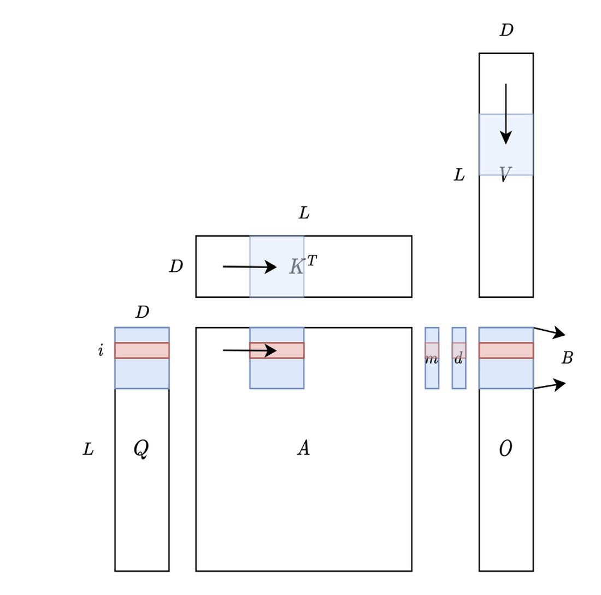

Flash Attention是一种IO感知（IO-aware）的精确注意力算法，用tiling减少GPU高带宽内存（HBM）与GPU片上SRAM之间的内存读写次数。
它已被广泛用于LLM推理和训练，是SGLang、vLLM等现代服务引擎的默认注意力后端。
这是一篇可视化解释Flash Attention以及IO感知tiling如何降低现代注意力kernel内存流量的文章。
在弄清Flash Attention如何工作前，先看naive注意力计算。
attention(Q,K,V) = softmax(QKᵀ/√d)·V，其中Q、K、V分别是query、key、value矩阵，d是每个注意力头的维度（用于缩放）。
关键挑战：QKᵀ 的中间结果可以极其巨大。序列长n时，QKᵀ 矩阵维度n×n，内存占用随O(n²) 缩放。随着序列长度增加（常见于大语言模型或多模态应用），GPU内存使用平方增长，使这种方法低效且资源密集。
直觉上可以用tiling把大矩阵拆成小块并行计算。然而这个方法被softmax操作难以并行化的事实阻碍。
Naive Softmax方程：softmax(xᵢ) = e^{xᵢ} / Σⱼ e^{xⱼ}。当xᵢ > 11时，e^{xᵢ} 会溢出，因为FP16最大值是65504，而e¹² = 162754.79。
naive softmax的代码实现如下：
def naive_softmax(x):
"""Naive Softmax implementation, prone to overflow in FP16."""
# Compute exponentials
exp_x = torch.exp(x)
# Compute sum of exponentials
sum_exp_x = torch.sum(exp_x)
# Normalize
return exp_x / sum_exp_x我们需要引入safe softmax避免溢出：safe-softmax(xᵢ) = e^{xᵢ-m} / Σⱼ e^{xⱼ-m}，其中m = max(xᵢ)。


可以用3-pass计算Safe Softmax的注意力输出。
用这个方法，由于SRAM无法一次装下全部Q和K，我们会读Q、K三次。这不高效率，因为访问HBM昂贵。
safe softmax的代码实现如下：
def safe_softmax_three_pass(x):
"""Safe Softmax implementation using three passes to avoid overflow."""
# Pass 1: Compute the maximum value for numerical stability
m = torch.max(x)
# Pass 2: Compute the exponentials
exp_x = torch.exp(x - m)
# Pass 3: Compute the sum and normalize
sum_exp_x = torch.sum(exp_x)
return exp_x / sum_exp_xOnline softmax是一种减少计算softmax所需pass数的技术。

online softmax的代码实现如下：
def online_softmax(x):
"""Online Softmax implementation using two passes for efficiency."""
# Pass 1: Compute maximum and sum of exponentials in one traversal
m = float('-inf') # Current maximum
s = 0.0 # Sum of exponentials
for xi in x:
m_old = m
m = max(m, float(xi))
s = s * torch.exp(torch.tensor(m_old - m)) + torch.exp(xi - m)
# Pass 2: Normalize
return torch.tensor([torch.exp(xi - m) / s for xi in x])我们可以清楚看到3-pass softmax的前两个pass融合成一个pass，这相当好，但还能更好吗？
对softmax(QKᵀ) 的计算，把2个pass融成1个的答案是否定的；然而我们需要的是softmax(QKᵀ)·V。

Flash Attention正是把softmax(QKᵀ) 和V的计算融合成一个pass的技术。
算法如下。Flash Attention作者推导出输出只依赖d_i'、d_{i-1}'、m_i、m_{i-1} 和x_i，因此可以在单循环中融合Self-Attention的所有计算。
代码实现如下：
def flash_attention_v1(Q, K, V):
"""
FlashAttention V1 implementation with single-pass computation.
Fuses Softmax(QK^T)V into one loop without storing S or P.
Args:
Q, K, V: Query, Key, Value matrices of shape (seq_len, head_dim)
Returns:
Output of attention: (seq_len, head_dim)
"""
seq_len, head_dim = Q.shape
scale = 1.0 / (head_dim ** 0.5) # Scaling factor 1/sqrt(d)
# Initialize output and running statistics
O = torch.zeros_like(Q) # Output
l = torch.zeros(seq_len, dtype=torch.float32, device=Q.device) # Sum of exponentials (d_i')
m = torch.full((seq_len,), float('-inf'), device=Q.device) # Max values (m_i)
# Single pass over sequence length
for i in range(seq_len):
# Compute Q[i] * K^T for row i
S_i = torch.matmul(Q[i:i+1], K.transpose(-1, -2)) * scale # Shape: (1, seq_len)
# Online Softmax for row i
m_i = torch.max(S_i) # Current max (m_i)
m_old = m[i] # Previous max (m_{i-1})
m_new = torch.maximum(m_old, m_i) # Update max
l_old = l[i] # Previous sum (d_{i-1}')
# Update sum of exponentials (d_i')
exp_diff = torch.exp(m_old - m_new)
exp_S = torch.exp(S_i - m_new)
l_new = l_old * exp_diff + torch.sum(exp_S)
# Update output: O[i] = O[i] * exp(m_old - m_new) + exp(S_i - m_new) * V
O[i] = O[i] * exp_diff + torch.matmul(exp_S / l_new, V)
# Update statistics
m[i] = m_new
l[i] = l_new
# Final normalization
O = O / l.unsqueeze(-1)
return O在单循环中融合Self-Attention的所有计算后，可以用tiling把大矩阵拆成小块，充分利用GPU SRAM的速度。

从上图可见，Q、K、V已被拆成块，我们可以一次性把它们加载到SRAM计算kernel中的注意力输出。
因此省掉了S和P中间结果存HBM的步骤，也减少了HBM到SRAM的IO访问。
代码实现如下：
def flash_attention_v1_tiling(Q, K, V, tile_size=128):
"""
FlashAttention V1 implementation with tiling to leverage SRAM.
Fuses Softmax(QK^T)V into one kernel with tiled computation.
Args:
Q, K, V: Query, Key, Value matrices of shape (seq_len, head_dim)
tile_size: Size of each tile for tiling computation
Returns:
Output of attention: (seq_len, head_dim)
"""
seq_len, head_dim = Q.shape
d = head_dim # Head dimension for scaling
scale = 1.0 / (d ** 0.5)
# Initialize output and normalization statistics
O = torch.zeros_like(Q) # Output
l = torch.zeros(seq_len, dtype=torch.float32, device=Q.device) # Sum of exponentials
m = torch.full((seq_len,), float('-inf'), device=Q.device) # Max values
# Tile over sequence length for Q and K
for i in range(0, seq_len, tile_size):
# Tile boundaries for Q
i_start = i
i_end = min(i + tile_size, seq_len)
# Load Q tile into SRAM
Q_tile = Q[i_start:i_end]
for j in range(0, seq_len, tile_size):
# Tile boundaries for K and V
j_start = j
j_end = min(j + tile_size, seq_len)
# Load K and V tiles into SRAM
K_tile = K[j_start:j_end]
V_tile = V[j_start:j_end]
# Compute S = QK^T / sqrt(d) for the tile
S_tile = torch.matmul(Q_tile, K_tile.transpose(-1, -2)) * scale
# Online Softmax within the tile
m_tile = torch.max(S_tile, dim=-1, keepdim=True)[0]
exp_S = torch.exp(S_tile - m_tile)
l_tile = torch.sum(exp_S, dim=-1, keepdim=True)
# Update global statistics
m_old = m[i_start:i_end, None]
m_new = torch.maximum(m_old, m_tile)
l_old = l[i_start:i_end, None]
l_new = l_old * torch.exp(m_old - m_new) + l_tile
# Update output: O = O * exp(m_old - m_new) + exp(S - m_new) * V
O[i_start:i_end] = O[i_start:i_end] * torch.exp(m_old - m_new).squeeze(-1)
O[i_start:i_end] += torch.matmul(exp_S / l_new, V_tile)
# Update m and l
m[i_start:i_end] = m_new.squeeze(-1)
l[i_start:i_end] = l_new.squeeze(-1)
# Final normalization
O = O / l.unsqueeze(-1)
return O参考：https://hebiao064.github.io/flash-attn